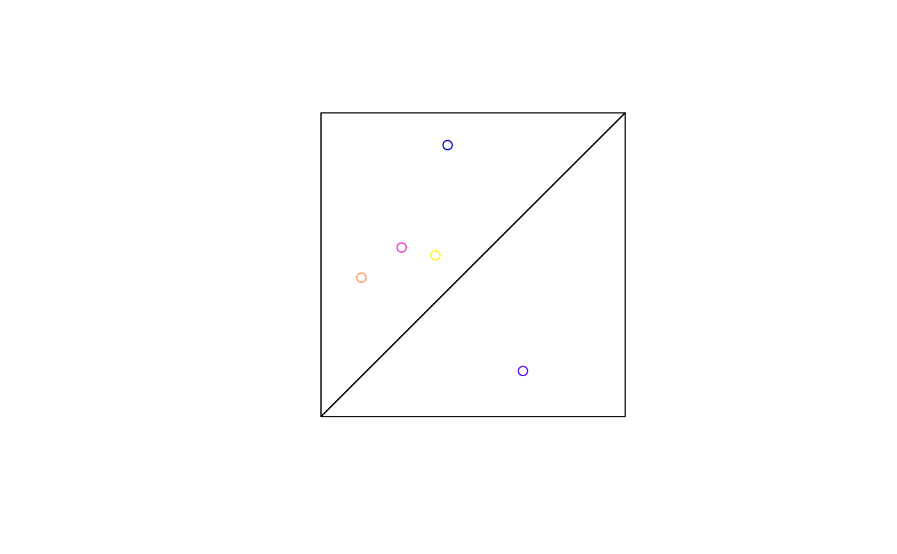
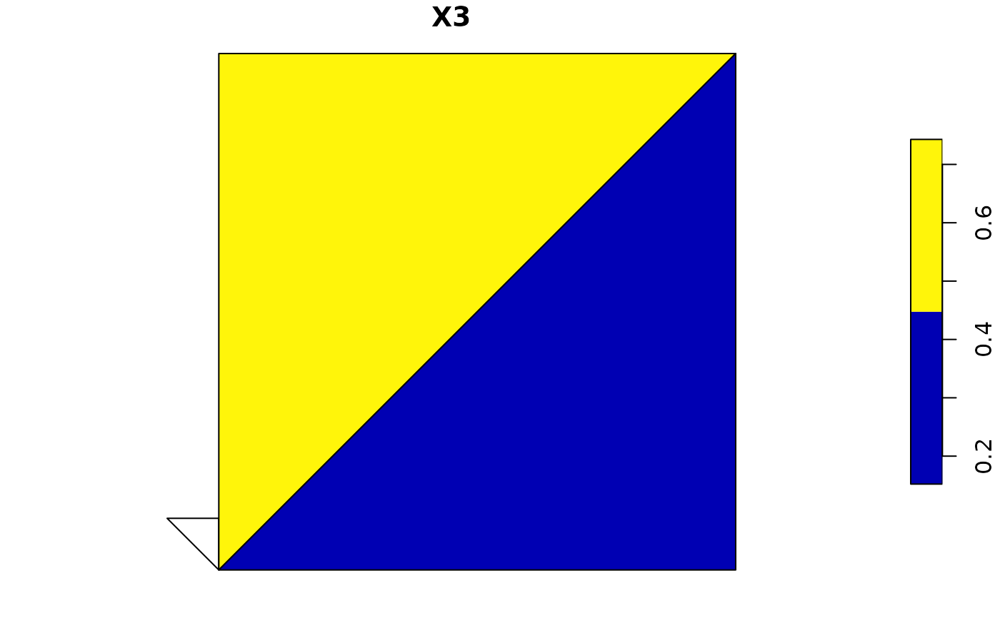
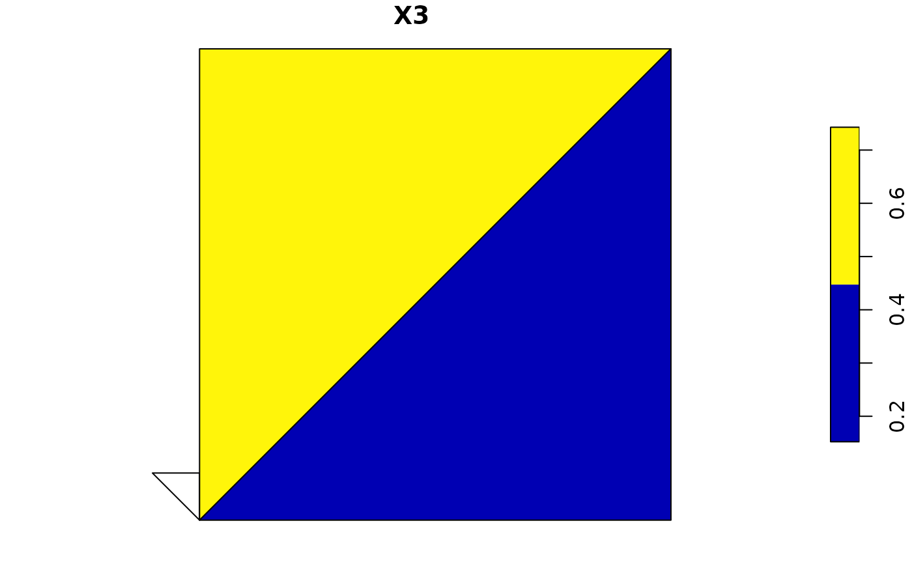

aggregate an sf object, possibly union-ing geometries
# S3 method for sf
aggregate(
x,
by,
FUN,
...,
do_union = TRUE,
simplify = TRUE,
join = st_intersects
)Arguments
- x
object of class sf
- by
either a list of grouping vectors with length equal to
nrow(x)(see aggregate), or an object of classsforsfcwith geometries that are used to generate groupings, using the binary predicate specified by the argumentjoin- FUN
function passed on to aggregate, in case
idswas specified and attributes need to be grouped- ...
arguments passed on to
FUN- do_union
logical; should grouped geometries be unioned using st_union? See details.
- simplify
logical; see aggregate
- join
logical spatial predicate function to use if
byis a simple features object or geometry; see st_join
Value
an sf object with aggregated attributes and geometries; additional grouping variables having the names of names(ids) or are named Group.i for ids[[i]]; see aggregate.
Details
In case do_union is FALSE, aggregate will simply combine geometries using c.sfg. When polygons sharing a boundary are combined, this leads to geometries that are invalid; see https://github.com/r-spatial/sf/issues/681.
Note
Does not work using the formula notation involving ~ defined in aggregate.
Examples
m1 = cbind(c(0, 0, 1, 0), c(0, 1, 1, 0))
m2 = cbind(c(0, 1, 1, 0), c(0, 0, 1, 0))
pol = st_sfc(st_polygon(list(m1)), st_polygon(list(m2)))
set.seed(1985)
d = data.frame(matrix(runif(15), ncol = 3))
p = st_as_sf(x = d, coords = 1:2)
plot(pol)
plot(p, add = TRUE)

(p_ag1 = aggregate(p, pol, mean))
#> Simple feature collection with 2 features and 1 field
#> Geometry type: POLYGON
#> Dimension: XY
#> Bounding box: xmin: 0 ymin: 0 xmax: 1 ymax: 1
#> CRS: NA
#> X3 geometry
#> 1 0.5951766 POLYGON ((0 0, 0 1, 1 1, 0 0))
#> 2 0.2997908 POLYGON ((0 0, 1 0, 1 1, 0 0))
plot(p_ag1) # geometry same as pol
# works when x overlaps multiple objects in 'by':
p_buff = st_buffer(p, 0.2)
plot(p_buff, add = TRUE)
 (p_ag2 = aggregate(p_buff, pol, mean)) # increased mean of second
#> Simple feature collection with 2 features and 1 field
#> Geometry type: POLYGON
#> Dimension: XY
#> Bounding box: xmin: 0 ymin: 0 xmax: 1 ymax: 1
#> CRS: NA
#> X3 geometry
#> 1 0.5951766 POLYGON ((0 0, 0 1, 1 1, 0 0))
#> 2 0.5958297 POLYGON ((0 0, 1 0, 1 1, 0 0))
# with non-matching features
m3 = cbind(c(0, 0, -0.1, 0), c(0, 0.1, 0.1, 0))
pol = st_sfc(st_polygon(list(m3)), st_polygon(list(m1)), st_polygon(list(m2)))
(p_ag3 = aggregate(p, pol, mean))
#> Simple feature collection with 3 features and 1 field
#> Geometry type: POLYGON
#> Dimension: XY
#> Bounding box: xmin: -0.1 ymin: 0 xmax: 1 ymax: 1
#> CRS: NA
#> X3 geometry
#> 1 NA POLYGON ((0 0, 0 0.1, -0.1 ...
#> 2 0.5951766 POLYGON ((0 0, 0 1, 1 1, 0 0))
#> 3 0.2997908 POLYGON ((0 0, 1 0, 1 1, 0 0))
plot(p_ag3)

# In case we need to pass an argument to the join function:
(p_ag4 = aggregate(p, pol, mean,
join = function(x, y) st_is_within_distance(x, y, dist = 0.3)))
#> Simple feature collection with 3 features and 1 field
#> Geometry type: POLYGON
#> Dimension: XY
#> Bounding box: xmin: -0.1 ymin: 0 xmax: 1 ymax: 1
#> CRS: NA
#> X3 geometry
#> 1 NA POLYGON ((0 0, 0 0.1, -0.1 ...
#> 2 0.5951766 POLYGON ((0 0, 0 1, 1 1, 0 0))
#> 3 0.5999887 POLYGON ((0 0, 1 0, 1 1, 0 0))
(p_ag2 = aggregate(p_buff, pol, mean)) # increased mean of second
#> Simple feature collection with 2 features and 1 field
#> Geometry type: POLYGON
#> Dimension: XY
#> Bounding box: xmin: 0 ymin: 0 xmax: 1 ymax: 1
#> CRS: NA
#> X3 geometry
#> 1 0.5951766 POLYGON ((0 0, 0 1, 1 1, 0 0))
#> 2 0.5958297 POLYGON ((0 0, 1 0, 1 1, 0 0))
# with non-matching features
m3 = cbind(c(0, 0, -0.1, 0), c(0, 0.1, 0.1, 0))
pol = st_sfc(st_polygon(list(m3)), st_polygon(list(m1)), st_polygon(list(m2)))
(p_ag3 = aggregate(p, pol, mean))
#> Simple feature collection with 3 features and 1 field
#> Geometry type: POLYGON
#> Dimension: XY
#> Bounding box: xmin: -0.1 ymin: 0 xmax: 1 ymax: 1
#> CRS: NA
#> X3 geometry
#> 1 NA POLYGON ((0 0, 0 0.1, -0.1 ...
#> 2 0.5951766 POLYGON ((0 0, 0 1, 1 1, 0 0))
#> 3 0.2997908 POLYGON ((0 0, 1 0, 1 1, 0 0))
plot(p_ag3)

# In case we need to pass an argument to the join function:
(p_ag4 = aggregate(p, pol, mean,
join = function(x, y) st_is_within_distance(x, y, dist = 0.3)))
#> Simple feature collection with 3 features and 1 field
#> Geometry type: POLYGON
#> Dimension: XY
#> Bounding box: xmin: -0.1 ymin: 0 xmax: 1 ymax: 1
#> CRS: NA
#> X3 geometry
#> 1 NA POLYGON ((0 0, 0 0.1, -0.1 ...
#> 2 0.5951766 POLYGON ((0 0, 0 1, 1 1, 0 0))
#> 3 0.5999887 POLYGON ((0 0, 1 0, 1 1, 0 0))